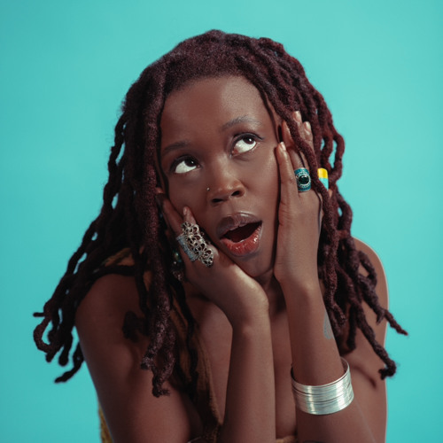
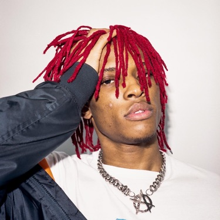
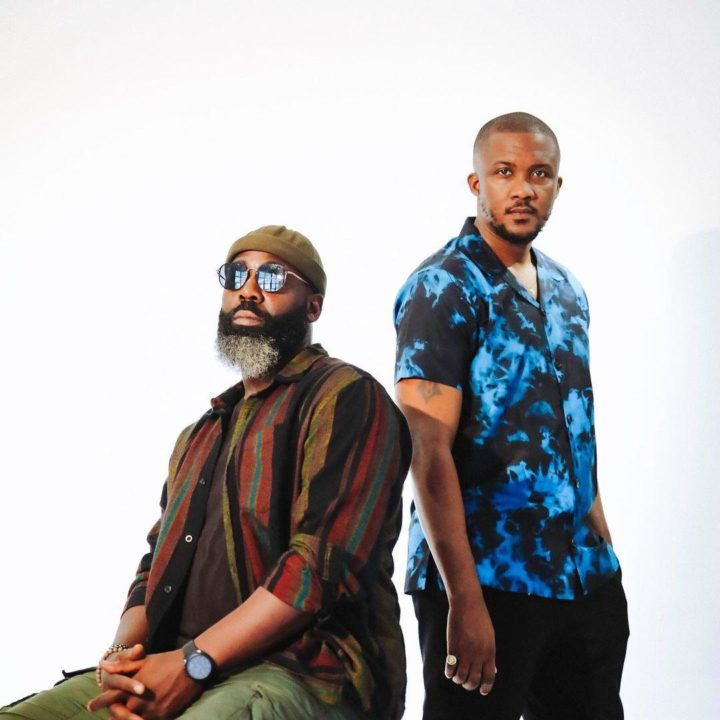
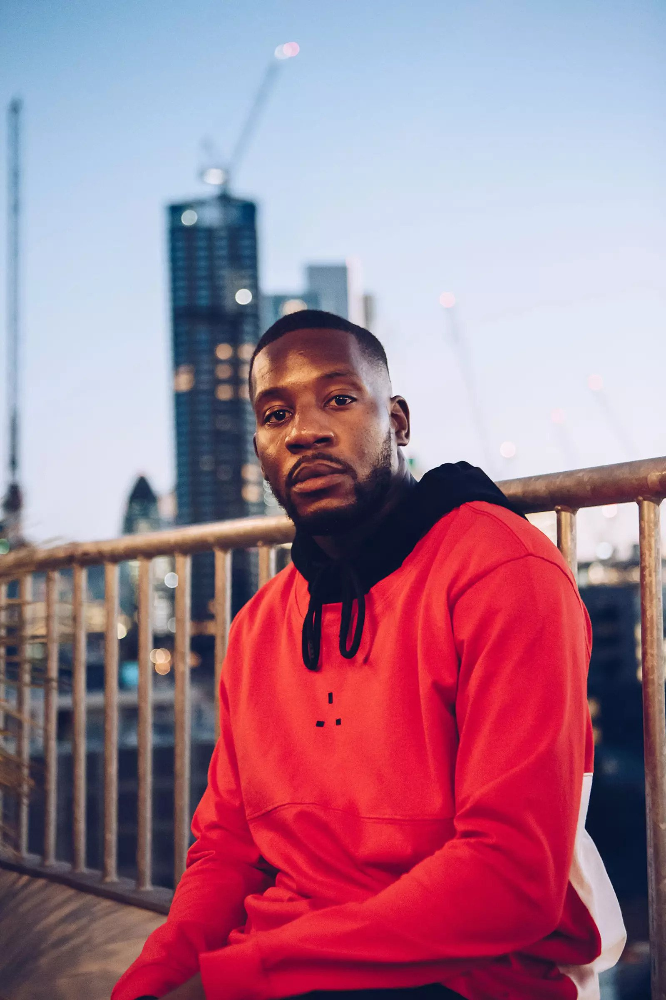
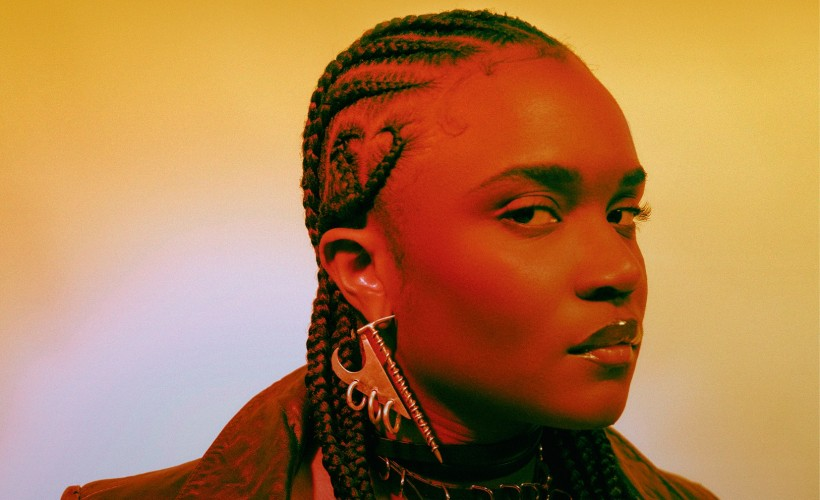
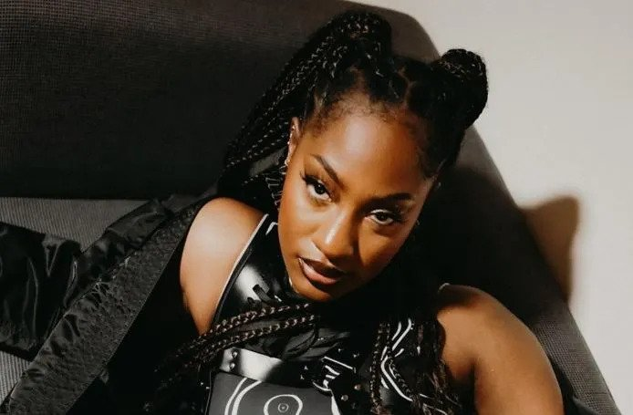
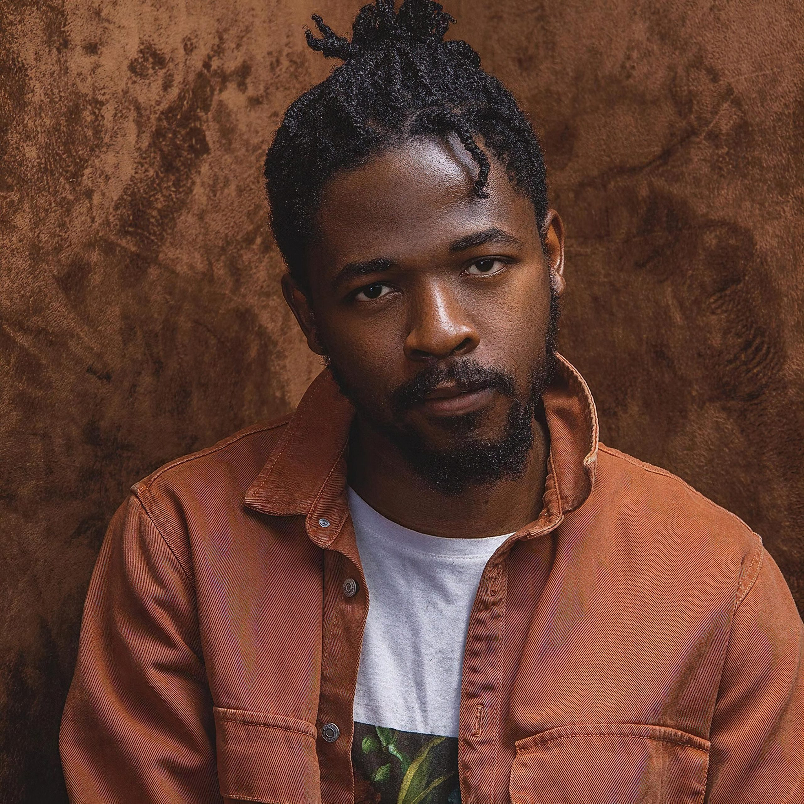
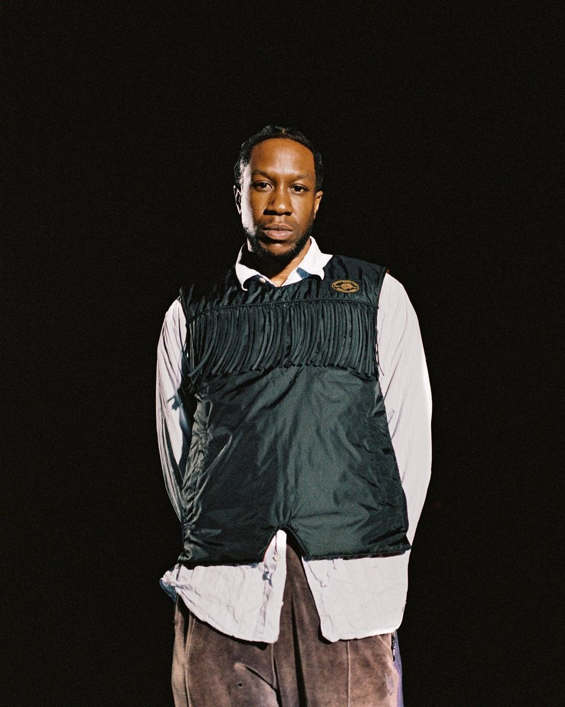
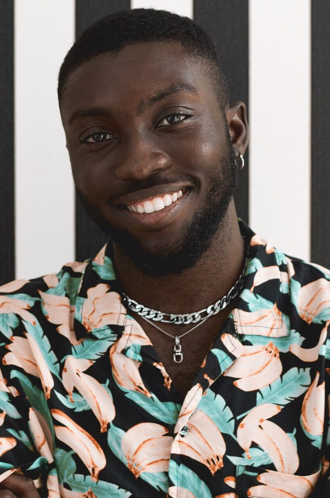
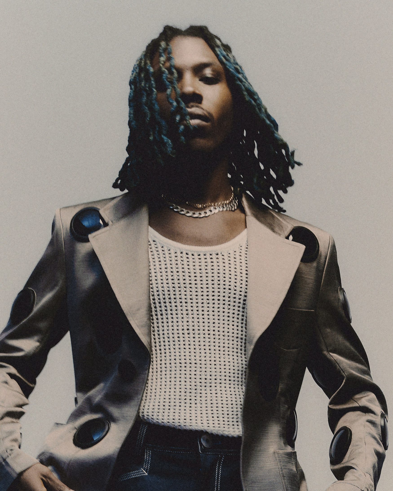

My top 10 favorite Alté Artists
(10) Lady Donli
Elegant Lady Donli. Her music is fun to listen to. Incredibly vivacious and spirited, a motif that almost everyone can enjoy that incorporates poppy and Palmwine themed vibes. Overall positive energy and cool music. She is a mainstay of the Alté culture and a very accomplished artist. Anyone looking to gain a sense of the Alté scene should check out Lady Donli because her songs give you the Alté feel, but not too much at once so you don't feel overwhelmed. Totally recommend!
(9) Maison2500
Another skilled Alté creator who combines trap music with a retro aesthetic is Maison2500. He consistently writes original, good music. Whenever Maison is a featured artist on a track, I can always expect a banger; that's how good he his. He sounds like the love child of Playboi carti and Alté. (By the way, Playboi carti is the GOAT.) His beats are always on target and are also a lot of fun to listen to. Maison can be a great introduction to the Alté genre if you like trap music.
(8) Show Dem Camp
The best duo in the Alté game is Show Dem Camp (Tec and Ghost). Their music embodies coolness! Their songs make you simply want to unwind and enjoy Alté without worrying about anything. The atmosphere when their song on is just unrivaled. I often find myself singing along to their songs as if I were on a karaoke set. They also have unparalleled rapping skills, and their bars are playful and melodic. Show Demp Camp is must listen for literally anyone.
(7) Ragz Originale
The only producer in the the list and for good reason. I found out recently about Originale from another artist, whose name I'll mention later, and I can't get enough of his music. His features are just too superb, and his production quality is on par many more well-known producers. Originale is seriously underrated. He consistently makes good beats and he has a good sense of what good beats should sound like.
(6) Amaarae
What a vibe Amaarae is. Listening to her voice is such a wonderful experience. Her aesthetic is incredibly stylish. She really does embody style in both her songs and her outfits. The more I listen to her songs, the more I enjoy it; it never gets boring. An all-around talented and badass creator.
(5) Tems
Tems has recently gained recognition on an international scene, and for good reason. I incredibly gifted performer with a lovely voice that draws the listener in. Her music is highly enjoyable and catchy. Overall positive vibes I would definitely recommend everyone, regardless of their musical tastes, to give her music a try.
(4) Jonny Drille
His voice is heavenly and a delight to hear. He is essentially the king of soothing, romantic melodies from the Alté genre. Jonny always delivers with his stunning melodies that convey a variety of feelings at once, whether it's a sense of love, betrayal, or peace. If you haven't heard any of Jonny's songs before, I urge you to do so because I can assure you that you won't be disappointed.
(3) BenjiFlow
Literally, BenjiFlow is the GOAT. Dude is so underappreciated and should get more recognition. He has no bad songs, all of his songs are 10s. He consistently delivers with each song. BenjiFlow is a walking vibe, literally. I truly, really enjoy his music, and the fact that he frequently collaborates on bangers with Ragz Originale. He easily ranks in the top ten in the underground music scenes in both Africa and the UK.
(2) Odunsi (The Engine)
Odunsi is a pioneer of the Alté culture. He has spent the longest time playing a significant role in the movement. It's always has a banger with Odunsi, and his music is creative and fresh. He's the one! He has songs with a chill vibe, songs with the Alté vibe, songs that make make you feel badass, songs that make you want to do stuff—this guy's discography has it all. He is a top 3 Alté artist without a doubt because of his versatility and creativity.
(1) Cruel Santino (AKA Santi)
The man, the myth, the legend. Santino is the best! Dude is the very definition of the word alte. He is the pinnacle of creativity. In all honesty, I believe that he significantly pushes the boundaries of traditional music. You either like his music or you don't, but if you do, you can tell that he exudes greatness. He is a highly polarizing figure with his music. It takes some time for his works to grow on listeners, but once they do, you just can't put them down. Each album has a distinct and varied sound. I can respect the fact that this guy pushes himself to create a fresh sound for each album.